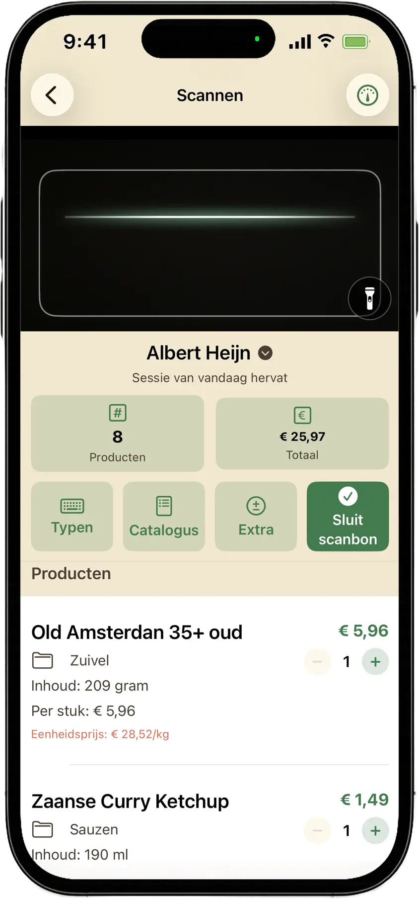

Scannen
Scan in de winkel of thuis op de bon
Richt de camera op de streepjescode, of typ regels handmatig van je kassabon. Controleer naam, prijs, gewicht en categorie — hoe secuurder, hoe betrouwbaarder je vergelijking.
- Supermarkt kiezen vóór elke bon
- Handmatige invoer als backup
- Open Food Facts stelt soms een naam voor (jij beslist)
